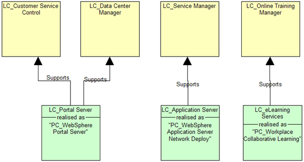
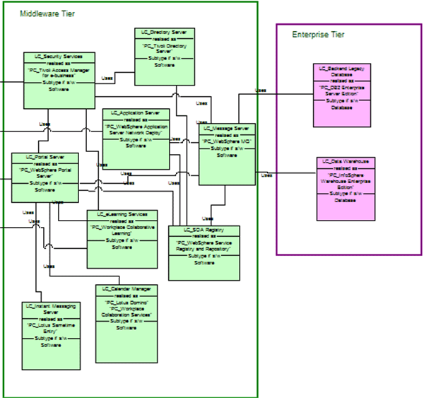
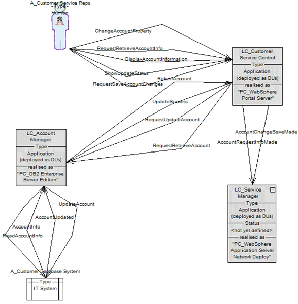
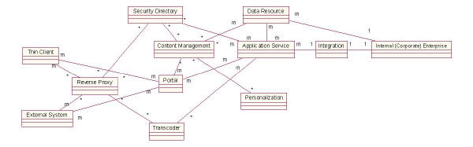
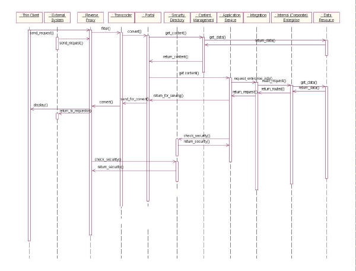

The example at the end of this guidance is a traditional example of a component model. Depending on level of
complexity and required elaboration, the component model may also be rendered in a more rigorous fashion by using
multiple views. These views include the following:
-
Logical Component Relationship View - Similar to the Component Relationship Diagram in the traditional example
below
-
Logical Component Sequence View - Similar to the Component Interaction Diagram in the traditional example
below
-
Logical Component Collaboration View - An alternate rendering of the Logical Sequence View
-
Logical Component Structure View - An alternative to the Logical Component Relationship View (see explanation
following figure 2 below)
-
Physical Component Relationship View - A physical version of the Component Relationship View
-
Physical Component Structure View - A physical version of the Component Structure View
Users of the SA4TeamSD configuration of IBM's Rational System Architect must choose one of these when creating a
new diagram. The following illustrations will highlight simplified examples of some of these views. For more
information, refer to the System Architect tool mentor associated with the Component Model artifact.

Figure 1: Logical Component Relationship View

Figure 2: Logical Component Structure View
The example in figure 2 was created using System Architect. The relationship illustrated is similar to figure 1,
in that it illustrates the same using dependency except that it does not indicate direction of the
dependency. The more significant difference is that the line between components represents a logical connector. A
connector is an actual model element within System Architect and exists because messages have been defined that flow
between the two components. Unlike the Logical Component Relationship View, this view cannot be used to depict general
dependencies. The component information in the illustration is entered and stored within System Architect.

Figure 3: Logical Component Collaboration View.
Traditional example component description for Integration Hub (labeled as integration in diagrams)
The Integration provides a 'front end' or single access point to systems running on the back-end application
nodes. This component often plays the role of a proxy for individual transactions within applications that exist within
the enterprise or in partner organizations. The Adapter also shields other components from the proprietary technologies
used by back-end products. It could, for example, convert between text formats like Extended Binary Coded Decimal
Interchange Code (EBCDIC) and American Standard Code for Information Interchange (ASCII), hide the details of stored
procedure calls, or perform protocol conversion from one business level protocol to another.
-
Responsibilities: The integration hub accepts simple requests and routes them to the
appropriate enterprise system. It returns results to the requesting client. In the case of compound requests, the
hub must submit multiple requests to the enterprise system and return responses to the correct system. It is
currently an open design issue as to whether the integration hub must recompose enterprise system responses into a
single response for the requesting client.
-
Required service levels:
Users and Presentation: The integration hub must accommodate up to 300 concurrent
requests.
|
User / group name
|
Number in group
|
Type of use
|
|
Application Service
|
Up to 6 logical application service logical nodes
|
Application services are making simple and compound requests for enterprise information
|
Performance and Capacity: Integration hub
|
Component name
|
Component response requirement (for 95% of requests)
|
Capacity requirements
|
Response requirement during recovery
|
Impact if not met
|
Minimum response before considered unavailable
|
|
Integration hub
|
100ms for simple requests. Note that this does not include response of any other components.
|
Integration hub must accommodate 300 concurrent simple requests. Average expected arrival
rate of requests is 50 per second with peaks of about 125 per second.
|
NA (Note: this field is more meaningful when describing and end to end response)
|
End to end response time of 1.2 seconds cannot be met. Other errors such as exhausting
threads may occur as internal queues lengthen.
|
NA (Note: this field is more meaningful when describing and end to end response)
|
Availability: Define availability requirements as required by the users of the component per the
following example:
|
Service hours required
|
0500-2400 PST Mon-Sat
|
|
Special characteristics
|
Peak rate is about 2.25 time average.
|
|
Impact of loss for this component
|
Loss of integration hub causes loss of all system function for the registered user.
|
|
Fallback plan
|
There is no fallback plan currently
|
|
Availability requirement
|
Very high availability is required.
|
|
Number of outages acceptable
|
Any outage causes significant loss of revenue
|
|
Recovery requirement
|
Recovery time has not been estimated.
|
Reasonableness and Risk: This approach poses substantial risk unless mitigated by hardware
reliability features and possible parallel hubs. Design Rationale: The integration hub will be
implemented with adapters, MQ and MQI because of the need for transformation of requests to enterprise systems.
Recomposition of compound requests must be understood before final design choices are made.
Implementation Approach: The integration hub will be based on WebSphere.
-
Component Relationship Diagram

-
Component Interaction Diagram

|